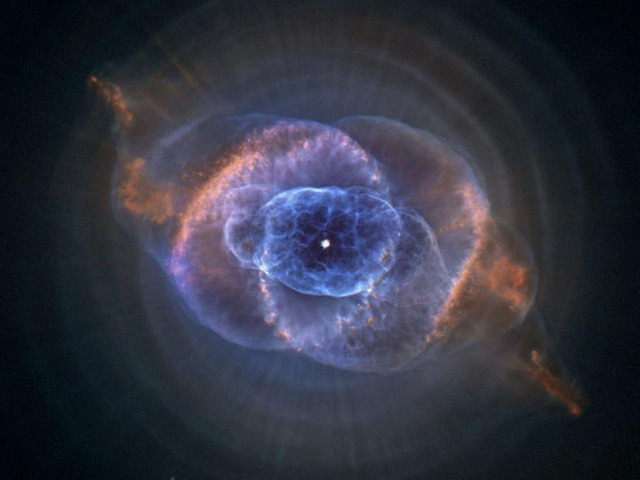
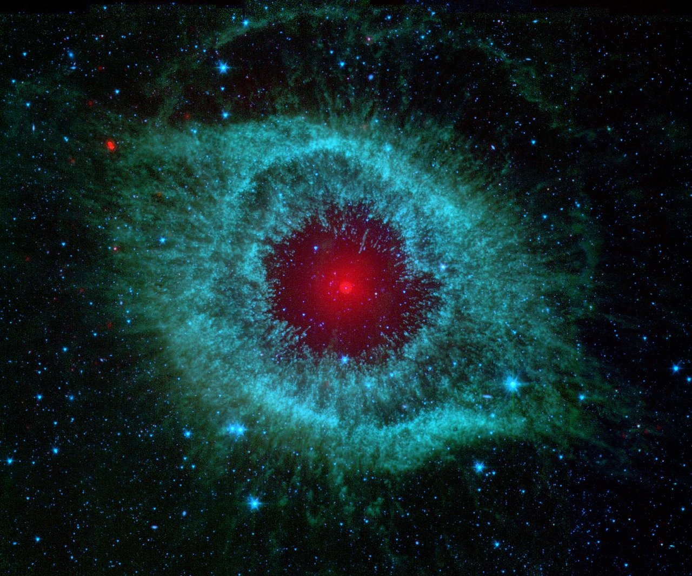

As nebulosas são berçários de estrelas e cemitérios de estrelas antigas. Essas nuvens gigantes de gás e poeira cósmica são as esculturas mais impressionantes do universo, exibindo cores vibrantes e formas complexas.

Nebulosa de Emissão

Nebulosa de Reflexão

Nebulosa Escura